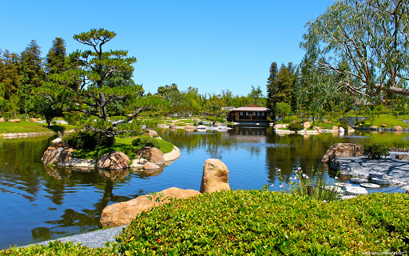
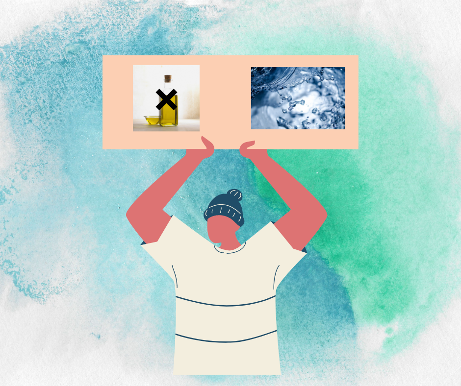
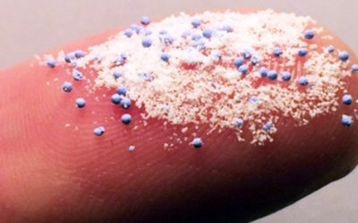
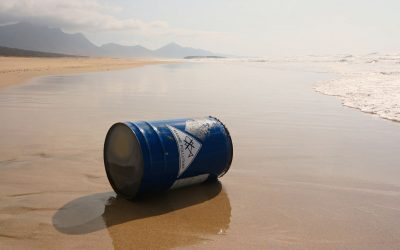

how to prevent Water Pollution

Don't throw Grabrage in water
Don’t throw litter into rivers, lakes or oceans. Help clean up any litter you see on beaches or in rivers and lakes, make sure it is safe to collect the litter and put it in a nearby dustbin.

Planting
By having more plants in your garden you are preventing fertiliser, pesticides and contaminated water from running off into nearby water sources.

Say No to oil into water
Be careful about what you throw down your sink or toilet. Don’t throw paints, oils or other forms of litter down the drain. Use environmentally household products, such as washing powder, household cleaning agents and toiletries.

Off tap when not in use
Conserve water by turning off the tap when running water is not necessary. This helps prevent water shortages and reduces the amount of contaminated water that needs treatment.

Microplastics
PRODUCT REVIEW The Giant Issue of Microplastics First, we will have a look at the background story on micro-plastics, and then we will go into detail on how the situation regarding micro-plastics in our environment impacts us today.

chemicals
Industrial and agricultural work involves the use of many different chemicals that can run-off into water and pollute it. Metals and solvents from industrial work can pollute rivers and lakes.